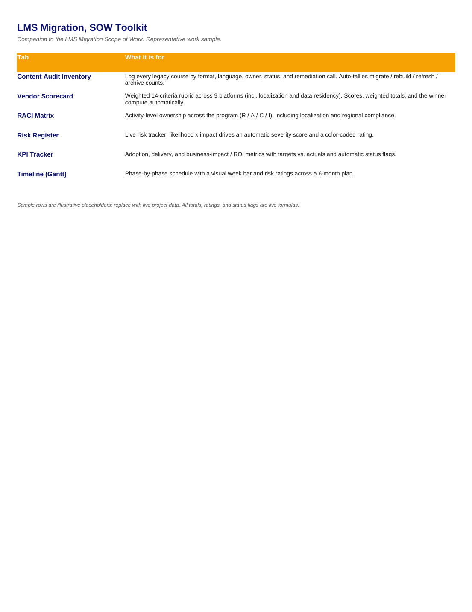
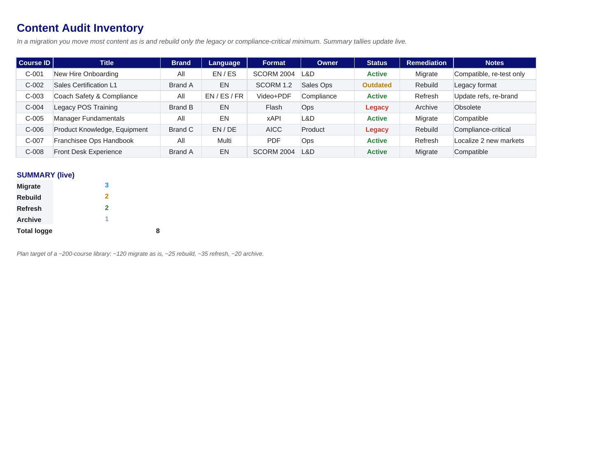
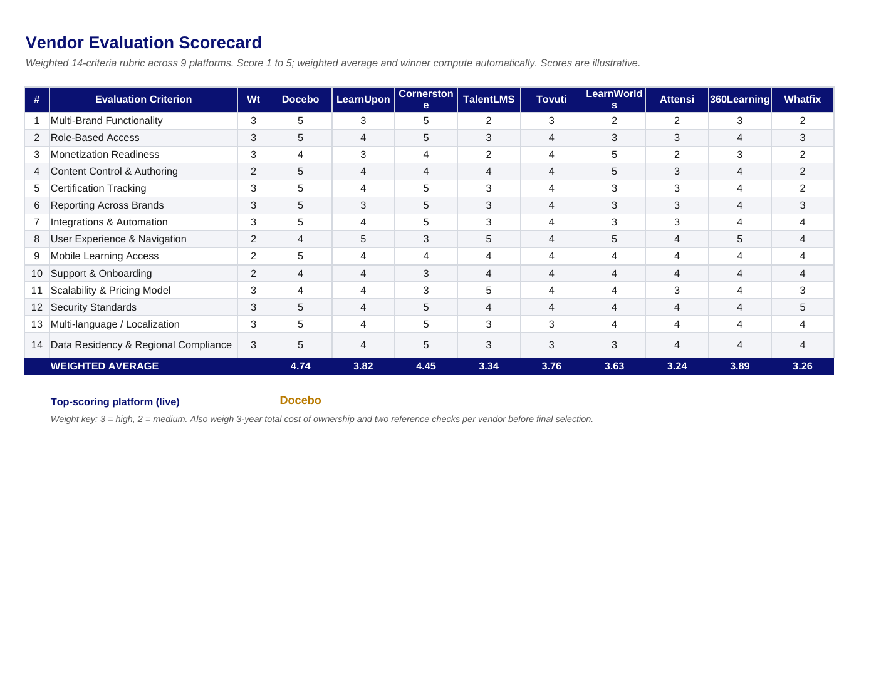
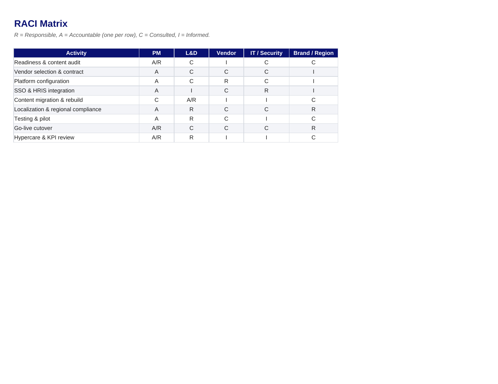
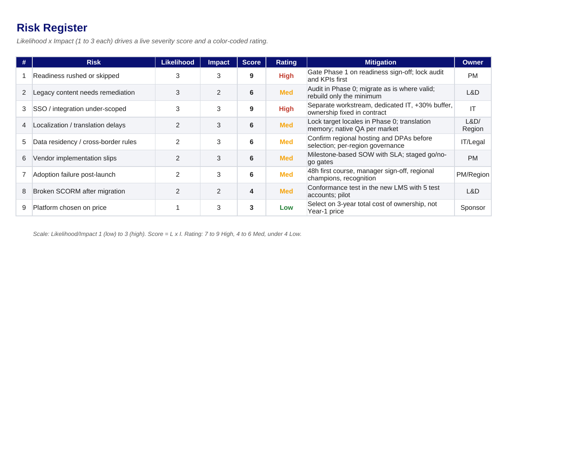
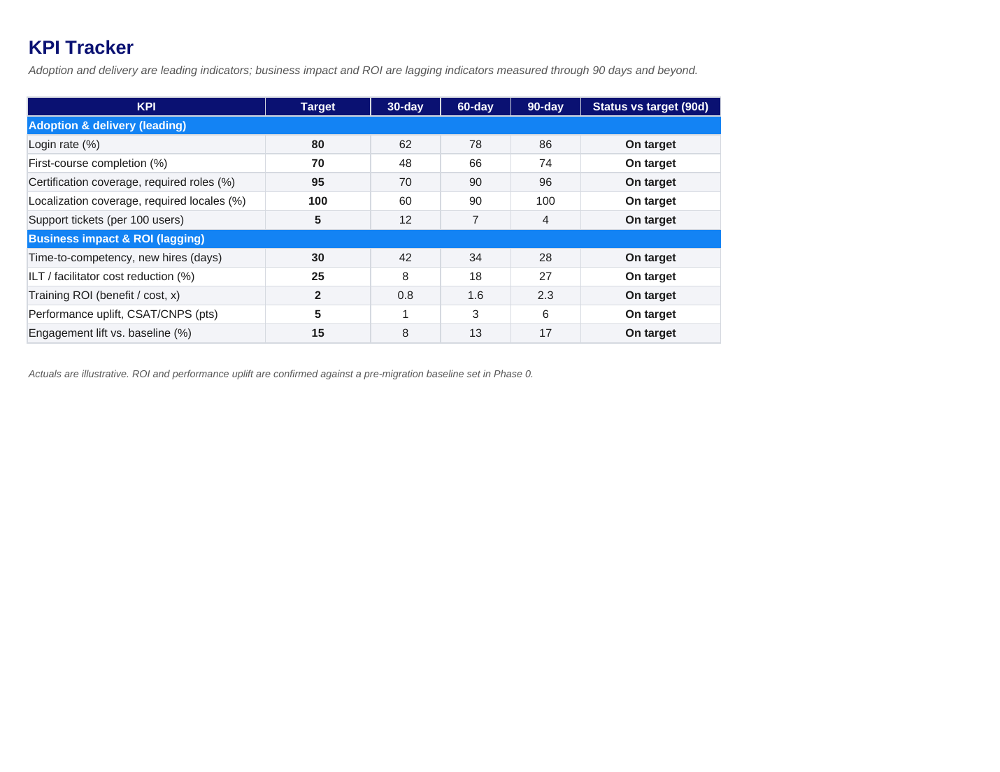
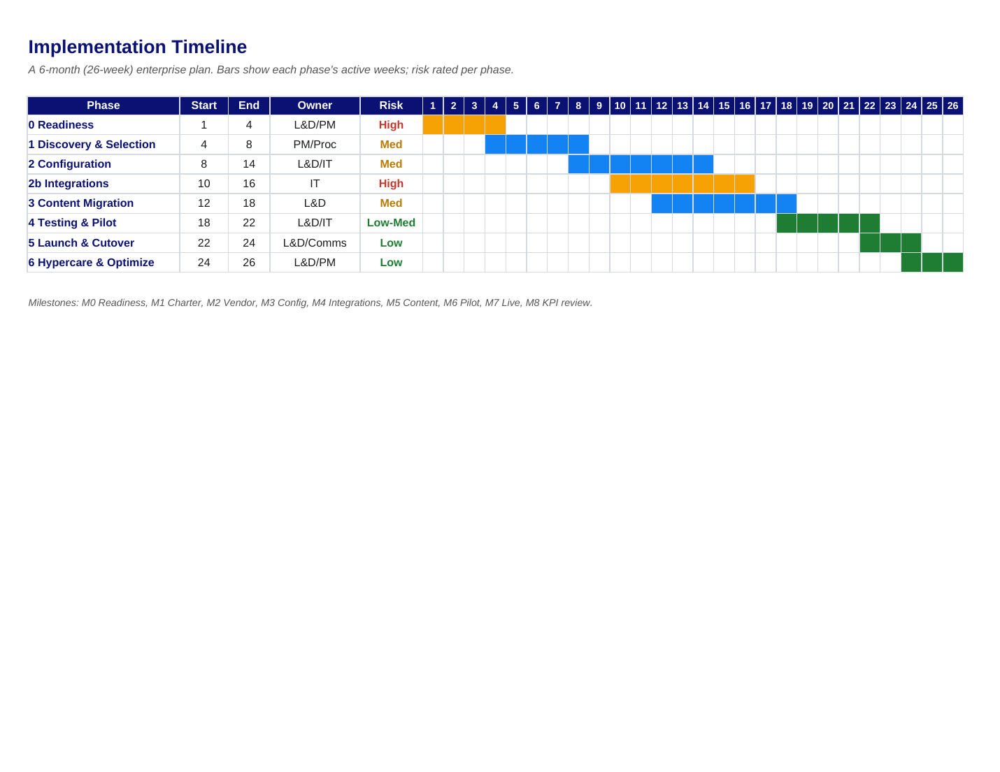

The charter says what we're doing and why. This is the document that says exactly how: every deliverable, the standard it has to clear to get signed off, who owns each piece, and the work broken down step by step. It's what turns "migrate the LMS" into something a team can actually execute without arguing about what "done" means.
Companion document: this Scope of Work pairs with the LMS Migration Charter, which authorizes the project and sets the high-level scope.
A charter authorizes the work, but it stays deliberately high-level. The minute a team starts building, the questions get specific: what exactly are we delivering, what does "accepted" mean, who signs off, and in what order does the work happen? Leave those unanswered and every one of them turns into an argument mid-project.
I translated the charter into a working scope statement. Every deliverable got a plain acceptance criterion, the actual bar it has to clear to be signed off, plus a named approver. I broke the work into a full work breakdown structure, wrote out the functional and technical requirements (down to the integrations and the security standards), and pinned each activity to an owner in the RACI. Nothing in here contradicts the charter; it just makes it executable.
This is the difference between a plan that sounds good in a kickoff and one a team can actually run. Acceptance criteria mean "done" stops being a matter of opinion. The WBS means nobody's guessing what comes next. And when scope pressure shows up, and it always does, the boundaries are already written down and the change-control path is already agreed.
Scope of Work: Full Document
A scope of work is only as good as what a team can do with it on Monday morning. This one ships with a companion Excel workbook: six working tabs with live formulas rather than static screenshots, so the plan is executable from day one. Flip through the tabs below, or download the workbook to use it.







Writing the bar for each deliverable before we built it turned sign-off into a checklist instead of a negotiation. “Good enough” had an actual definition.
A pretty timeline impresses people in a kickoff. A work breakdown tells them what to actually do on Monday. The second one is what kept the project moving.
Grounding the functional and technical requirements in the actual evaluation rubric meant we configured against real needs, not a wishlist someone dreamed up in a meeting.
I'd version the scope statement formally from day one. It evolves as discovery sharpens, and a clean change log makes that a feature, not a mess to untangle later.